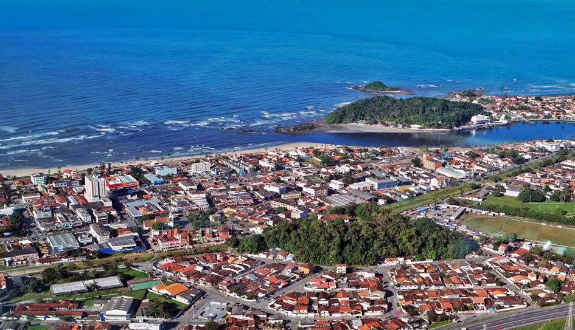

Itanhaém foi fundada em 22 de abril de 1532, sendo a segunda cidade mais antiga do Brasil. Localizada no Litoral Sul de São Paulo, é um município de grande importância histórica e cultural, oferecendo ao turista a possibilidade de conhecer diversos locais que remetem e retratam de forma fiel a sua história.
Há duas versões para significado do nome da Cidade, proveniente do tupi itá-nha'ẽ: uma afirma que significa pedra que canta, e outra, pranto de pedra ou pedra que chora. O nome é uma referência ao som produzido pela batida do mar sobre as pedras, nas praias do Município.
História
O povoamento de Itanhaém começou à época das Capitanias Hereditárias, durante a expedição colonizadora comandada pelo português Martim Afonso de Sousa a serviço do Reino de Portugal. Apenas três meses antes, o navegador português havia fundado a Vila de São Vicente, considerada a primeira cidade do Brasil.
Itanhaém foi elevado à categoria de Vila, no ano de 1561, recebendo o nome ‘Vila Conceição de Itanhaém’. Graças às construções da época, que eram de grande porte, conquistou o status de Município.
Durante o período colonial, o litoral paulista era povoado por tribos indígenas, entres as principais, tupiniquins, tamoios e os tupinambás. A guerra entre os grupos eram constantes, fato que foi aproveitada pelos europeus. Durante as tentativas dos franceses de invadir o território brasileiro, os tupiniquins se aliaram aos portugueses, enquanto que os tupinambás e os tamoios se tornaram aliados dos franceses.
Em 1563, o navio comandado pelo alemão Hans Staden naufragou em alto mar e o navegador conseguiu nadar até a antiga ‘Vila Conceição de Itanhaém’. Com seu grupo, partiu a pé até a aldeia do cacique Cunhambebe, na região de Mangaritiba, Rio de Janeiro.
Depois, participou de uma expedição de canoa até Bertioga, no litoral paulista, para capturar inimigos, onde tornou artilheiro do Forte São João. Acabou aprisionado pelos índios Tupinambás, mas se utilizou dos seus conhecimentos em medicina para curar o irmão do cacique, que estava muito enfermo, acabando Hans por escapar da morte.
Outro personagem marcante na história do Brasil colonial foi Padre José de Anchieta. Itanhaém também é conhecida como “a terra de Anchieta”, por causa da presença do famoso padre jesuíta na Cidade durante muitos anos da época. O religioso andou por todo o litoral paulista, catequizando índios, batizando e ensinando.
Para manter vivo esse rico capítulo do país, a Prefeitura criou o roteiro “Caminhos de Anchieta em Itanhaém”, um misto de religiosidade e história contada por meio de tour por alguns pontos do Município.
Cultura

A Cidade também tem estreita ligação com a cultura. É a terra natal de personagens importantes da cultura brasileira, como os consagrados pintores Benedito Calixto, Alfredo Volpi e Emídio de Souza. No final do século XIX, renomados artistas da Cidade criaram o Gabinete de Leitura, um espaço para atividades artísticas e culturais. Depois de anos desativado, o local foi reconstruído pela Prefeitura em 2011 e voltou a ser palco para cultura e lazer no Município.
Itanhaém também tem o título de “Amazônia Paulista”. O que não é à toa: são cerca de 300 km² de Mata Atlântica e uma bacia hidrográfica de cerca de 912 km de rios, além de toda a diversidade de fauna e flora presente nestas reservas naturais.
O principal rio da Cidade é o ‘Rio Itanhaém’, com vegetação predominante de manguezal, destacando restinga nos afluentes Rio Branco e no Rio Preto, com uma grande variedade de espécies de animais silvestres. Por isso, a pesca é uma das atividades mais importantes da economia do Município, empregando mais de 500 profissionais, além de uma ótima alternativa de lazer.
Outra grande reserva natural de Itanhaém é a Ilha da Queimada Grande, protegida pelo Ibam. Localizada a 35 km da costa continental do Município, é conhecida por abrigar as mais variadas espécies de cobras. O desembarque é proibido devido à presença em grande quantidade do animal, especialmente a Jararaca-ilhoa, que nunca foi encontrada em nenhum outro lugar no mundo. Sua população estimada é de 20 mil a 25 mil serpentes e sua picada pode matar uma pessoa em apenas seis.
Com toda esta riqueza natural, histórica e cultura, Itanhaem tem vários tipos de atrativos turísticos, como igrejas, museus, passeios nas ilhas oceânicas, rios, mata atlântica, itinerários culturais e de lazer para toda a família.
O cartão de visita da Cidade são as belas praias, com suas ótimas balneabilidade durante o ano inteiro. Entre as mais populares estão as Praias do Sonho, do Cibratel e dos Pescadores, onde o fluxo turístico é intenso. Durante a temporada de verão e feriados, o Governo Municipal promove diversos eventos, como shows, esportes, aulas de dança, de ginástica e muito mais.
Praias
Itanhaém conta ainda com diversas praias, que são o cartão de visitas da Cidade, sendo no total catorze, em cerca de 26 quilômetros, conhecidas principalmente por suas belezas naturais. Entre as mais populares estão as Praias dos Sonhos, do Cibratel e dos Pescadores, onde o fluxo turístico é intenso, principalmente, por suas ótimas balneabilidades durante o ano inteiro, onde os turistas podem realizar diversas práticas esportivas. Nos fins de temporada e feriados, o Governo Municipal promove diversos eventos, como shows, esportes, aulas de dança, de ginástica e muito mais, tendo como objetivo agitar o público presente.
Praias:
- Praia Praião
- Praia do Verde-Mar
- Praia dos Pescadores ou Prainha
- Praia do Tombo ou Praia do Rio
- Praia do Suarão
- Praia do Cibratel II
- Praia do Cibratel I
- Praia das Conchas
- Praia dos Sonhos
- Praia Gaivota
- Praia da Saudade